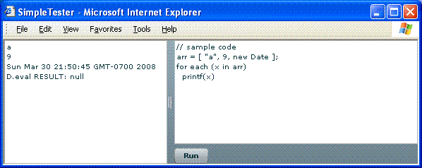
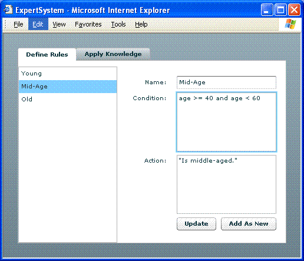
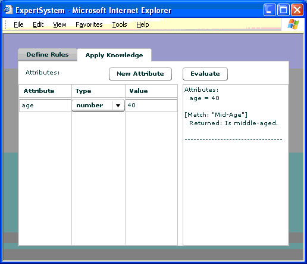
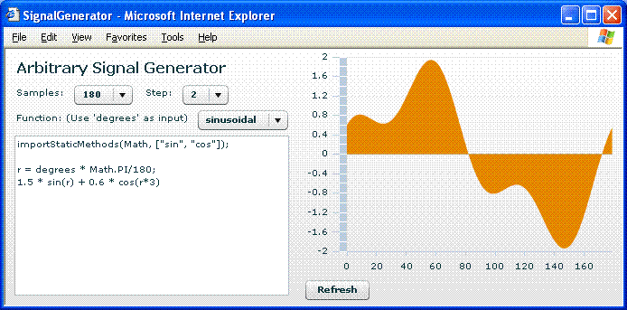
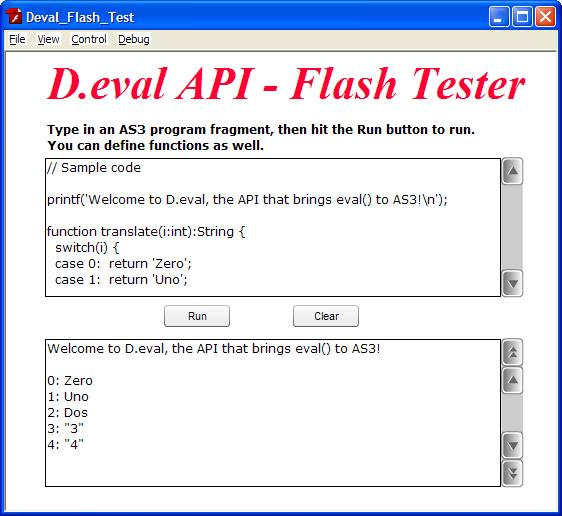

The D.eval API and Language User's Guide
Table of Content
Introduction
Background
The Software and Resources
Introduction to the Supported Language
Getting Started
The Language
Variables
Expressions
Extended Logical Operator Keywords
Using ActionScript 3 Classes
Statements
User-Defined Functions
Using Flash Top-Level Classes and Functions
Built-In Functions
The Runtime Environment and the API
Using the D.eval API
The Runtime Context
Pre-Parse Dynamic Code and Libraries
Logging and Program Output
Pre-Importing Global Objects
Examples
Simple Examples
Display XML and Complex Data In DataGrid
An "Expert System"
Arbitrary Signal Generator
Using D.eval API in Flash Programs
Final Words
Introduction
Background
The eval() function in JavaScript and earlier versions of
ActionScript™ was used to execute textual dynamic code at runtime.
ActionScript™ 3 chooses to break away from this backward compatibility
and deprecated eval(). Yet, some programmers and designers
still feel strongly about its needs, including the following applications:
- Expression-driven programming.
- End-user scriptable environment.
- End-user defined conditions and actions.
Examples in this guide will illustrate such use cases.
Expression-driven programming is to treat executable code as data. Executable code can be passed to function calls, loaded from and saved to database tables, or entered by end users. Expression-driven programming can greatly simplify coding in some situations, and can do things impossible without. Let us see some use cases.
Use case 1: provide a single labelFunction for one or more
DataGridColumn's, and use their dataField
properties as expressions to access parts, aggregated or calculated value
of the data.
Use case 2: a production-rule based expert system with end-user specified executable conditions and actions.
Use case 3: a end-user scriptable environment, such as a DOM system within a Flex™ application.
These use cases show that, dynamic code execution not only provides
convenience to certain programming situations, but also opens up new
architectural and design possibilities. The D.eval API fills this need for
ActionScript™ 3. You simply invoke D.eval() in AS3 (hence
the name of the API) as you would with eval() in JavaScript.
The API is apparently straightforwad, and it supports a powerful language.
The Software and Resources
The D.eval API software is freeware. It consists of a 70K-byte pure-AS3
library, D.eval-?.?.swc, where ?.?
is the version number, along with documentation and examples. The software is
tested working with Adobe Flex&grade; 3 and Flash CS3™.
The TestRunner program, also included along with examples, is the unit testing platform for the D.eval API itself. The test cases are grouped into a number of categories; they are all compiled into a Flex module, so that more test cases can be compiled in without changing the tester program itself. You can run the test cases, and copy any of them into the code-runner section to edit and try out.
Most examples are for Flex programs, except the Deval Flash Tester application that is for Flash CS3 (source). The SimpleTester example (source) is great for experiementing with arbitrary dynamic code. The UseDynamicCodeLibrary example (source) is very similar to SimpleTester, except that it can take user-defined functions and use them in evaluating separately entered dynamic code. This mimics the use (or reuse) of user-defined dynamic code library.
Other examples demonstrate major usages of this library. The
DevalDataGrid
example (source)
shows how to use expressions for DataGridColumn's dataField.
For some reason, Adobe's MXML compiler does not accept expressions for
DataGridColumn.dataField; to display a calculated value, you have
to either provide a custome labelFunction for each calculation,
or pre-calculate them in the data object; neither solution is satisfactory.
The D.eval API solves this dilemma gracefully. The
SignalGenerator
example (source)
is an interesting one. The program creates a data set to display in a chart by
looping through angular (or time) increments; the user provides a function to
calculate the amplitude for each point in time. This constitutes an arbitrary
signal generator. A number of predefined functions are provided as examples. The
ExpertSystem
example (source)
is perfect for using dynamic code, because user can provide executable conditions
and actions for production rules. Not surprisingly, the "inference engine" in
this example is extremely simple: it just does a one-pass scan of all conditions
and fire matched rules; but the point is well made.
Some of these examples will be examined in this User's Guide in detail.
Introduction to the Supported Language
The D.eval API supports a powerful language, which is essentially a full JavaScript with some minor differences. The following list shows its major features:
- Supports all the operators and flow control statements of JavaScript/AS3.
- Supports all E4X operators and operations.
- Supports user
functiondeclaration. - Supports the syntax of AS3-style type declarations for
varand function return values and parameters. Type, however, is simply discarded. - Supports
importstatement to import AS3 classes so that they can be used tonewinstances or call its static methods. - All Flash top-level functions are available to dynamic code, and a
number of built-in functions, including
printf(),importFunction()andimportStaticMethods(). - Provides comprehensive interaction with the hosting AS3 environment, with support at both the language and the API levels.
- Does not support JavaScript object-orientation afterthoughts such as
prototypeand JavaScript-style object constructors. In other words, the language does not support defining classes in any ways. Object usage, i.e., the dot-notation, is supported. - Extended keyword support of
and,or,not,xor,nand, andnor, useful for taking end-user input with more English-like logical expressions.
Getting Started
To use the D.eval API, all you have to do is import the r1.deval.D
class and call D.eval(codeString).
Let us build a simple test run application that takes and executes user code. From there, we can experiment with the supported language. Its source code is listed below.
<?xml version="1.0" encoding="utf-8"?>
<mx:Application layout="absolute" xmlns:mx="http://www.adobe.com/2006/mxml"
creationComplete="D.setTextControlOutput(stdout)">
<mx:Script><![CDATA[
import r1.deval.D;
private function doRun():void {
var result:Object = D.eval(srcCode.text);
D.display("D.eval RESULT: " + result);
}
]]></mx:Script>
<mx:HDividedBox width="100%" height="100%">
<mx:TextArea id="stdout" width="40%" height="100%" />
<mx:VBox width="60%" height="100%">
<mx:TextArea id="srcCode" width="100%" height="100%">
<mx:text><![CDATA[// sample code
arr = [ "a", 9, new Date ];
for each (x in arr)
printf(x)
]]></mx:text>
</mx:TextArea>
<mx:Button label="Run" click="doRun()" />
</mx:VBox>
</mx:HDividedBox>
</mx:Application>
This is the typical way of using the D.eval API: prior to using
D.eval, set the output destination to
receive parse and runtime output. Then, when the user dynamic code is
available, call D.eval(). In this example, we do not have too
much to pass to and from the dynamic code, so the call is as simple as it
gets. A screenshot is shown here:

The Language
The language supported by the D.eval API is essentially a full JavaScript with some minor differences. Its major features are listed before. This chapter explains the language features in detail.
Variables
Variables do not have to be declared with var before use.
All variables are dynamically typed; you can specify a type for a variable
in var but that type is ignored.
Expressions
All AS3's expressions are supported, including literals and E4X expressions.
Literal syntax includes null, this, boolean,
integer, number, string, object, array and E4X objects. The this
references the "this" object as the second parameter passed from the
D.eval(codeString, context, thisObject). The super
keyword in AS3 is not supported.
Extended Logical Operator Keywords
In addition to JavaScript/AS3 operators, the dynamic language supports
these extended logical operator keywords: and, or,
not, nand, nor, and xor.
They are useful for taking end-user input with more English-like logical
expressions:
var sick = false; var young = true; if (young and not sick) premium = "low";
Using ActionScript 3 Classes
Like in AS3, a class must first be imported via the import
statement before it can be used. Unlike AS3, only fully qualified class
names are accepted; no wildcard characters are allowed. Also, the AS3
classes to be used by the dynamic code must be present at runtime. You can
import multiple classes in a single statement.
Once a class is imported, it can be used just like in AS3. The class name without the package part is used; classes can be assigned to variables; you can create instances of a class, and call static methods of that class. For instance:
import flash.display.Sprite, mx.utils.StringUtil;
var mySprite:Sprite = new Sprite;
printf( StringUtil.trim(' abc ') );
Statements
All AS3 statements are supported in the dynamic language with a handful of exceptions. The following table lists supported statements and directives.
| ActionScript 3 | Dynamic Language | Comment |
|---|---|---|
break |
break | Same as AS3 |
case |
case | Same as AS3 |
continue |
continue | Same as AS3 |
default |
default | Same as AS3 |
do..while |
do..while | Same as AS3 |
else |
else | Same as AS3 |
for |
for | Same as AS3 |
for..in |
for..in | Same as AS3 |
for each..in |
for each..in | Same as AS3 except that, when var is used to declare the variable, type is not allowed; this is different from the rest of the language. |
if |
if | Same as AS3 |
return |
return | Same as AS3 |
switch |
switch | Same as AS3 and JavaScript; the case values can be any expressions and are not necessarily constants. |
throw |
throw | Same as AS3 |
try..catch..finally |
| Not supported (but may be supported in the future.) |
while |
while | Same as AS3 |
with |
| Not supported. |
default xml namespace |
default xml namespace | Same as AS3 |
import |
import | Supported to import AS3 classes that are avaiable at the time of running. |
include |
| Not supported. |
use namespace |
| N/A |
User-Defined Functions
Functions can be defined dynamically, too. The syntax is exactly the same as in AS3, but the type information for parameters and return type is simply discarded. But notice! These functions are not the same as AS3 functions! Therefore, they can not be returned to the calling AS3 code nor be passed as parameters to imported AS3 functions (see below). User-defined functions can be assigned to variables or passed as parameters to other user-defined functions, like so:
function inc(x) {
return x+1
}
function dec(x) {
return x-1
}
function delegate(x:int, f:Function):int {
return f(x)
}
delegate(5, dec)
Using Flash Top-Level Classes and Functions
Flash top-level classes and functions can be used exactly like in AS3. For example,
var date = new Date(1987, 3, 5);
var value = escape('cond=age<50 and age>30');
var num = Number('1234');
trace('TRACE from dynamic code.');
Built-In Functions
The dynamic language includes a few built-in functions.
function printf(msg_fmt, ...):void
This function prints the message to the system's output display.
See Logging and Program Output for more discussion.
The first parameter can be a string containing parameter indicators like
{0}, {1}, etc.; they are replaced by values of
the following parameters.
function importFunction(name, theFunction):void
This function imports a function, typically a class static method, to be globally invokable. For instance:
import mx.utils.StringUtil;
importFunction('trim', StringUtil.trim);
printf( trim(' abc ') ); // call the imported function
function importStaticMethods(cls, criteria:*=null):void
This function imports all the static methods of cls, a class
object, that match the criteria. If criteria is
null, all static methods are returned; otherwise, the
criteria can be either a RegExp object or an array of strings.
For instance:
importStaticMethod(Math, [ 'sin', 'cos' ]); printf( sin(0.12) ); // call the imported function
The Runtime Environment and the API
Using the D.eval API
The API consists of just one class, r1.deval.D; all of its
methods are static. The class documentation
is the most accurate. In this section, we discuss a few specific points.
The Runtime Context
The D.eval(program, context, thisObject) method is the
centerpiece of the API. Its program parameter normally is a
String of program code, but can also be an executable object returned
by the D.parseProgram() method. The return value of
D.eval() is that of either a return statement
or the last expression executed.
In the language, variables, classes and functions are all named entities.
When retrieving a named entity, the order of their resolution is: local
scope chain, this object (if present), the context object and
finally, the global context. The global context keeps global objects such as
system functions, classes and imported objects like classes and functions.
When setting a variable with an unqualified name, the same resolution chain
is followed; if a settable value is found, the value is set therein;
otherwise, a new variable is created in the current (local) scope.
The variable declaration with the keyword var declares a
variable in the current scope. The top level scope is the context object
passed in to the D.eval(program, context, thisObject) call.
The thisObject and context parameters provides more
sophisticated communication between the dynamic code and the hosting
environment. The thisObject is referenced by the this.
The context object can hold prepolulated values as named variables accessible
by the dynamic code. Often times, the context is omitted and
thisObject is to pass a value object on entry. The top-level
variables in the dynamic code are stored in the context object.
To set new values in thisObject, use the this. On
exit, values set in either object can be used by the calling AS3 code.
So why we need these two parameters rather than a single one? The context is needed when a) the thisObject is not a dynamic AS3 class instance, and b) you intend to use the values set by the dynamic code. This is probably not happening very often, but it may.
Let us see some examples. The following code passes a values to the dynamic code as variable named "fruit", "price", and "count".
<?xml version="1.0" encoding="utf-8"?>
<Application xmlns="http://www.adobe.com/2006/mxml"
creationComplete="test()">
<Script><![CDATA[
import r1.deval.D;
function test():void {
var code:String =
'switch(fruit) {\n' +
' case "apple": return "sweet";\n' +
' case "lemon": return "sour";\n' +
' default: return "unknown";\n' +
'}';
var taste:String = D.eval(code, { fruit:'apple' });
var purchase:Object = { price:3.95, count:12 };
var cost:Number = D.evalToNumber('price * count', purchase);
}
]]></Script>
</Application>
We will use this program structure for other simple tests, where only
the test() function code will be present.
The next example demonstrates receiving values from the dynamic code and use them in the hosting environment.
function test():void {
var code:String =
'this.name = "Ron";\n' +
'this.age=50;\n' +
'var strategy = "plan A";\n' +
'var premium = 2000;';
var thisObj:Object = {};
var context:Object = {};
D.eval(code, context, thisObj);
trace("this.name: " + thisObj.name);
trace("this.age: " + thisObj.age);
trace("context.strategy: " + context.strategy);
trace("context.premium: " + context.premium);
}
Pre-Parse Dynamic Code and Libraries
If a piece of dynamic code is repeatedly used, it makes good sense to
pre-parse it, because parsing is a computationally intensive process and
there is no point to parse the same code again and again. The first
parameter of D.eval() can be an executable code object
produced by the D.parseProgram() call.
By default, for small programs, the D.eval API caches the parsed executable
object. You can call D.useCache() to change this behavior.
Functions declared in the dynamic code are stored like named variables
within the context object. You can retrieve them by a) explicitly
passing a context object to the eval() call, and b) on
exit, call the helper method, D.collectUserFunctions(), to
cleanse non-function data in the context object. You can reuse these functions
by passing that object as context to the following eval() calls.
This effectively enables a library mechanism of dynamically declared functions.
You can also call the D.parseFunctions() to simply retrieve the
function declarations, as in this example:
function test():void {
// Compile the user library:
var libCode:String =
'function sum(data:Array):Number {\n' +
' var ret:Number = 0;\n' +
' for each(var x in data) ret += x;\n' +
' return ret;\n' +
'}\n\n' +
'function avg(data:Array):Number {\n' +
' return (data == null) ? 0 : (sum(data) / data.length);\n' +
'}';
var userlib:Object = D.parseFunctions(libCode);
// Use the library to execute dynamic code:
var prog:String =
'var data = [ 1, 3, 5, 7 ];\n' +
'printf("Sum is: {0}", sum(data));\n' +
'printf("Average is: {0}", avg(data));\n';
D.eval(prog, null, userlib);
}
Logging and Program Output
The D.eval API parser and runtime engine may print out error and warning
messages. The dynamic language includes a built-in function, printf(),
allowing the dynamic code to print out user messages as well. The D.eval API
uses a user-function, assigned via D.setOutput(f:Function).
By default, that destination is trace(). The D provides
a convenience method to use a text control (such as <mx:TextArea>)
to write out multiple lines of messages, via the
D.setTextControlOutput(host:Object, prop:String, limit:int) method call.
The following is a typical setup for D.eval:
import r1.deval.D;
// creationComplete handler.
private function init():void {
// stdout is a <mx:TextArea>
D.setTextControlOutput(stdout);
}
Pre-Importing Global Objects
The D.importClass(), D.importFunction() and
D.importStaticMethods() methods allow you to programmatically
import these objects into the global scope for Deval execution. In the
dynamic code, the import statement and importFunction()
and importStaticMethods() functions simply invoke those methods
and behave the same way.
Because all global objects share the same namespace, name collisions can
happen. You can use the setOverrideGlobalOption() function with
constants OVERRIDE_GLOBAL_OVERRIDE, OVERRIDE_GLOBAL_WARN
or OVERRIDE_GLOBAL_ERROR to indicate name collision resolution.
By default it is OVERRIDE_GLOBAL_OVERRIDE.
Examples
Let us see some examples of using the D.eval API.
Simple Examples
Run simple expressions.
D.eval returns the value of the last expression execution if no
return statement is run; hence, running simple expressions can not
be easier:
var six:int = D.eval('1 + 5') as int;
Run expressions with parameters. By setting values to a this/context object, you can achieve parameterized expressions:
function dynaExpr(x:*, y:*, expr:String):* {
return D.eval(expr, {x:x, y:y});
}
// Use it:
trace( dynaExpr(1, 5, 'x + y') );
Import classes through API.
AS3 classes can be used in dynamic code to create new instances or invoke
their static methods. Before AS3 classes can be used, they must first be
imported. There are two ways to import classes, programmatically through
the API and use the import statement in the dynamic code.
If all possible, import through API to ensure the used AS3 classes are
indeed linked in to the executable swf file. The AS3 compiler may not
include classes not explicitly used in the code; when you use the
import directive in the dynamic code to load AS3 classes
that are not embedded or loaded, you will get runtime errors. The
following example AS3 code uses API to import classes.
import my.invention.MyClass;
D.importClass(MyClass);
var obj:MyClass = D.eval('new MyClass(1, 2, 3)') as MyClass;
Import classes in the dynamic code. Assuming your class is available at runtime, you can dynamically import that class like so:
var prog:String = 'import my.invention.MyClass;\n' +
'new MyClass(1, 2, 3)';
var obj:MyClass = D.eval(prog) as MyClass;
Import functions through API.
AS3 functions can be called from the dynamic code, but they must be imported first either through the API or dynamically in the code. Flash top-level functions, however, can be used directly. The following AS3 code uses the API to import classes.
import mx.utils.StringUtil;
D.importFunction('trim', StringUtil.trim);
trace( D.evalToString('trim(" abc ")') );
You can import all the static methods of a class with a single call:
import mx.utils.StringUtil;
D.importStaticMethods(StringUtil);
trace( D.evalToString( 'trim(" abc ")' ) );
trace( D.evalToString( 'substitute("Hello, {0}!", "World")' ) );
Import functions in dynamic code. The following example AS3 code dynamically imports and uses functions:
var prog:String =
'import mx.utils.StringUtil;\n' +
'importStaticMethods(StringUtil);\n' +
'trim(" abc ");\n' +
'substitute("Hello, {0}!", "World")';
trace( D.evalToString(prog) );
Display XML and Complex Data In DataGrid
This is the case where DataGrid can use D.eval API to gracefully
display calculated or manipulated values. The crux of the issue is that,
for some reason, Adobe's MXML compiler does not accept expressions for
DataGridColumn.dataField; to display a calculated value, you
have to either provide a custome labelFunction for each
calculation, or pre-calculate them in the data object; neither solution
is satisfactory. With D.eval API, all you have to do is create and use a
generic label function like this in those DataGridColumn's:
protected function showData(row:Object, col:DataGridColumn):String {
return String(D.eval(col.dataField, row));
}
A generic DataGridColumn-derived class can be developed.
This class is thin and easy. Why the D.eval API does not define such a
class? Only because the D.eval API is intended as a pure AS3 library
without any bearing on the Flex framework. The following is a complete
example
using this technique.
<?xml version="1.0" encoding="utf-8"?>
<mx:Application layout="absolute"
xmlns:mx="http://www.adobe.com/2006/mxml">
<mx:XML id="order">
<order>
<item id='1'>
<menuName>burger</menuName>
<criticalInfo>
<vegetarian>false</vegetarian>
<containsPeanuts>false</containsPeanuts>
</criticalInfo>
<salesInfo>
<quantity>3</quantity>
<price>3.95</price>
</salesInfo>
</item>
<item id='2'>
<menuName>fries</menuName>
<criticalInfo>
<vegetarian>true</vegetarian>
<containsPeanuts>false</containsPeanuts>
</criticalInfo>
<salesInfo>
<quantity>4</quantity>
<price>1.45</price>
</salesInfo>
</item>
</order>
</mx:XML>
<mx:Script><![CDATA[
import mx.controls.dataGridClasses.DataGridColumn;
import r1.deval.D;
protected function showData(row:Object, col:DataGridColumn):String {
return String(D.eval(col.dataField, row));
}
]]></mx:Script>
<mx:DataGrid dataProvider="{order.item}" width="450">
<mx:columns>
<mx:DataGridColumn headerText="Name"
dataField="menuName" labelFunction="showData"/>
<mx:DataGridColumn headerText="Vegetarian"
dataField="criticalInfo.vegetarian" labelFunction="showData"/>
<mx:DataGridColumn headerText="Peanuts"
dataField="criticalInfo.containsPeanuts" labelFunction="showData"/>
<mx:DataGridColumn headerText="Quantity"
dataField="salesInfo.quantity" labelFunction="showData"/>
<mx:DataGridColumn headerText="Price"
dataField="salesInfo.price" labelFunction="showData"/>
<mx:DataGridColumn headerText="Line Total"
dataField="salesInfo.price * salesInfo.quantity" labelFunction="showData"/>
</mx:columns>
</mx:DataGrid>
</mx:Application>

An "Expert System"
Production-rule-based expert systems store human knowledge in the form
of if-then rules, and produces "intelligent" results for given
input using its innate inference engine. The if-conditions are
boolean expressions, and the then-actions can be anything from
a piece of message that is understood by machine or human to fully
executable programs. What a perfect use case for the D.eval API! In
addition, the conditions would be a perfect place to use the
extended logical operator keywords like
and, or, not, etc.
The example only reflects the condition and action aspect of a real expert system; its inference engine does not quite live up to its name yet — it only does a one-pass scan of all rule conditions and fire the matched rules. The UI has two parts: the first one allows user to edit the knowledge base of conditions and actions; the second takes user input and applies the knowledge. The following screenshots show both.


The source code follows.
<?xml version="1.0" encoding="utf-8"?>
<mx:Application xmlns:mx="http://www.adobe.com/2006/mxml"
width="100%" height="100%" creationComplete="D.setTextControlOutput(stdout)">
<mx:Script><![CDATA[
import r1.deval.D;
[Bindable] private var rules:Array = [ // { name, cond, action }'s.
{ name: 'Young', cond: 'age < 40', action: '"Is young."' },
{ name: 'Mid-Age', cond: 'age >= 40 and age < 60', action: '"Is middle-aged."' },
{ name: 'Old', cond: 'age >= 60', action: '"Is old."' }
];
[Bindable] private var attrs:Array = [ // { attr, value }'s.
{ attr: 'age', value: 40, type: 'number' }
];
private function setCurrentRule():void {
var rule:Object = rulesList.selectedItem;
ruleName.text = rule.name;
ruleCond.text = rule.cond;
ruleAction.text = rule.action;
}
private function updateRule(asNew:Boolean=false):void {
var rule:Object = {
name: ruleName.text,
cond: ruleCond.text,
action: ruleAction.text
}
var a:Array = rules == null ? [] : rules;
if (asNew)
a.push(rule)
else
a[rulesList.selectedIndex] = rule;
rules = null;
rules = a;
}
private function addAttr():void {
var a:Array = (attrs == null) ? [] : attrs;
a.push({ attr: "(EDIT THIS)", type: "number", value: "(EDIT THIS)" });
attrs = null;
attrs = a;
}
private function evaluate():void {
// Collect all attributes and set it to x:
var x:Object = {};
var o:Object;
D.display("Attributes:");
for each(o in attrs) {
if (o.attr != '' && o.attr != '(EDIT THIS)') {
D.display(" " + o.attr + " = " + o.value);
switch(o.type) {
case 'number': x[o.attr] = Number(o.value); break;
case 'boolean': x[o.attr] = Boolean(o.value); break;
case 'string': x[o.attr] = String(o.value); break;
default: x[o.attr] = o.value; break;
}
}
}
for each(o in rules) {
if (D.evalToBoolean(o.cond, x)) {
D.display('\n[Match: "' + o.name + '"]');
var result:Object = D.eval(o.action, x);
if (result != null)
D.display(" Returned: " + result);
}
}
D.display("\n---------------------------------\n");
}
]]></mx:Script>
<mx:TabNavigator width="100%" height="100%" selectedIndex="1">
<mx:HBox label="Define Rules" width="100%" height="100%">
<mx:List id="rulesList" labelField="name" width="40%" height="100%"
dataProvider="{rules}" change="setCurrentRule()" />
<mx:Form label="Production Rule Details" width="60%" height="100%">
<mx:FormItem label="Name:" width="100%">
<mx:TextInput id="ruleName" width="100%"/>
</mx:FormItem>
<mx:FormItem label="Condition:" width="100%">
<mx:TextArea id="ruleCond" width="100%" height="100"/>
</mx:FormItem>
<mx:FormItem label="Action:" width="100%">
<mx:TextArea id="ruleAction" width="100%" height="100"/>
</mx:FormItem>
<mx:FormItem direction="horizontal">
<mx:Button label="Update" click="updateRule()"
enabled="{rulesList.selectedIndex >= 0}" />
<mx:Button label="Add As New" click="updateRule(true)"/>
</mx:FormItem>
</mx:Form>
</mx:HBox>
<mx:HBox label="Apply Knowledge" width="100%" height="100%">
<mx:VBox width="60%" height="100%">
<mx:HBox width="100%" paddingLeft="10" paddingRight="10">
<mx:Label text="Attributes:"/>
<mx:Spacer width="100%"/>
<mx:Button label="New Attribute" click="addAttr()"/>
</mx:HBox>
<mx:DataGrid id="attributes" width="100%" height="100%"
dataProvider="{attrs}" editable="true">
<mx:columns>
<mx:DataGridColumn headerText="Attribute" rendererIsEditor="true"
itemRenderer="mx.controls.TextInput"
dataField="attr" editorDataField="text"/>
<mx:DataGridColumn headerText="Type" rendererIsEditor="true"
dataField="type" editorDataField="selectedItem" width="90">
<mx:itemRenderer>
<mx:Component>
<mx:ComboBox>
<mx:Array>
<mx:String>number</mx:String>
<mx:String>boolean</mx:String>
<mx:String>string</mx:String>
</mx:Array>
</mx:ComboBox>
</mx:Component>
</mx:itemRenderer>
</mx:DataGridColumn>
<mx:DataGridColumn headerText="Value"
itemRenderer="mx.controls.TextInput" rendererIsEditor="true"
dataField="value" editorDataField="text"/>
</mx:columns>
</mx:DataGrid>
</mx:VBox>
<mx:VBox width="40%" height="100%">
<mx:Button label="Evaluate" click="evaluate()" />
<mx:TextArea id="stdout" width="100%" height="100%" />
</mx:VBox>
</mx:HBox>
</mx:TabNavigator>
</mx:Application>
Arbitrary Signal Generator
Let us do something more fun. We will create an arbitrary signal generator in Flex! It looks like:

This signal generator takes the function code that you enter and your samples/step selections and creates an array of numbers which is set to the chart's dataProvider. Your code is responsible for generating the signal sample value at a particular moment which is represented in degrees. A number of sample functions are provided in the drop-down list.
<?xml version="1.0" encoding="utf-8"?>
<mx:Application xmlns:mx="http://www.adobe.com/2006/mxml"
layout="absolute" backgroundColor="#FFFFFF" creationComplete="init()">
<mx:Script><![CDATA[
import r1.deval.D;
private function init():void {
examples.dataProvider = [
{ label: 'sinusoidal',
code: 'importStaticMethods(Math, ["sin", "cos"]);\n\n' +
'r = degrees * Math.PI/180;\n' +
'1.5 * sin(r) + 0.6 * cos(r*3)'
},
{ label: 'noise',
code: 'Math.random() * 2 - 1'
},
{ label: 'triangular',
code: 'period = 64;\n' +
'period_4 = period / 4;\n' +
'period_3_4 = period - period_4;\n\n' +
'x = degrees % period;\n' +
'if (x < period_4) return x;\n' +
'if (x < period_3_4) return period/2 - x;\n' +
'return x - period;'
},
{ label: 'square',
code: 'period = 64;\n' +
'period_2 = period / 2;\n\n' +
'x = degrees % period;\n' +
'return (x < period_2) ? 1 : -1;'
}
];
examples.selectedIndex = 0;
pickExample();
}
private function pickExample():void {
fxn.text = examples.selectedItem.code;
doGen();
}
private function doGen():void {
var _samples:int = samples.selectedItem as int;
var _step:int = step.selectedItem as int;
var prog:Object = D.parseProgram(fxn.text);
// Generate the signal sample values:
var signal:Array = [];
for (var i:int=0; i<_samples; ++i)
signal.push(Number(D.eval(prog, {degrees:i*_step})));
// Display them:
oscilloscope.dataProvider = signal;
}
]]></mx:Script>
<mx:HBox width="100%" height="100%">
<mx:VBox width="50%" height="100%" paddingLeft="10"
paddingRight="10" paddingTop="10" paddingBottom="10">
<mx:Label text="Arbitrary Signal Generator" fontSize="16" fontWeight="bold"/>
<mx:HBox>
<mx:Label text="Samples:"/>
<mx:ComboBox id="samples" selectedIndex="1"
dataProvider="{ [90,180,360,720] }" change="doGen()"/>
<mx:Label text=" Step:"/>
<mx:ComboBox id="step" selectedIndex="1"
dataProvider="{ [1,2,4,8] }" change="doGen()"/>
</mx:HBox>
<mx:HBox width="100%">
<mx:Label text="Function: (Use 'degrees' as input)"/>
<mx:ComboBox id="examples" change="pickExample()"/>
</mx:HBox>
<mx:TextArea id="fxn" width="100%" height="100%"/>
</mx:VBox>
<mx:VBox width="50%" height="100%">
<mx:AreaChart id="oscilloscope" width="350" height="250" paddingRight="10">
<mx:series><mx:AreaSeries/></mx:series>
</mx:AreaChart>
<mx:Button label="Refresh" click="doGen()"/>
</mx:VBox>
</mx:HBox>
</mx:Application>
Using D.eval API in Flash Programs
The D.eval API version 1.1 is made a pure ActionScript 3 library and works with
both Adobe Flex and Flash programming. To use it in Flash CS3, the development
environment for making Flash programs, you need to drop the D.eval API SWC file
into Flash CS3's components directory; on Windows, this directory is
C:\Documents and Settings\username\Local Settings\Application Data\Adobe\Flash CS3\en\Configuration\Components\. Then, within Flash CS3, a component named
D will show up in the components panel. Drag an instance
into the stage to make it available to your .fla file. The rest of
thethe programming is the same as described above.
A sample .fla is included in the samples/flash_test/
directory, as well as its executable .swf file. It looks like this:

In this program, the two multi-line text boxes are named input_txt
and output_txt, respectively. The relevant code is like this:
import r1.deval.D;
D.setTextControlOutput(output_txt);
run_btn.addEventListener(MouseEvent.CLICK,
function(e:Event):void { D.eval(input_txt.text) });
Final Words
The goal of the D.eval API is straightforward: to dynamically execute AS3 expressions and algorithms. However, the API's design and implementation go beyond that — it sports a full-blown embedded JavaScript language within ActionScript™ 3, supporting all JavaScript/AS3 expressions, flow-control statements and user-defined functions.
The D.eval API and the supported dynamic language work hand-in-hand for executing dynamic code at runtime, allow sophisticated data exchange between custom dynamic code and the hosting AS3 environment.
The capability to do dynamic programming opens a whole new world to your Flex™ 3 and Flash™ application design and development!